- 카테드랄 8F
- 카테드랄 7F
- 카테드랄 6F
- 카테드랄 5F
- 카테드랄 4F
- 카테드랄 3F
- 카테드랄 2F
- 카테드랄 1F
- 카테드랄 B1F
- 카테드랄 B2F
- 카테드랄 B3F
- 카테드랄 B4F
- 카테드랄 B5F
- 카테드랄 B6F
- 카테드랄 B7F
- 카테드랄 B8F
카테드랄 8F
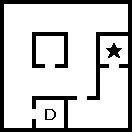
카테드랄 7F
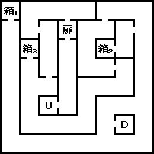
- 箱1 : 로자리오
- 箱2 : 로자리오
- 箱3 : 소마
카테드랄 6F
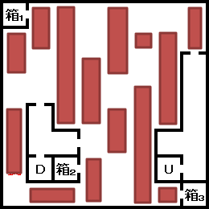
- 箱1 : 반혼향
- 箱2 : 마하브후 스톤
- 箱3 : 비공침(秘孔針)
카테드랄 5F
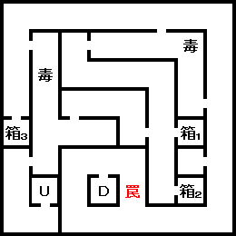
- 箱1 : 마하라기 스톤
- 箱2 : 함정
- 箱3 : 마하지오 스톤
카테드랄 4F
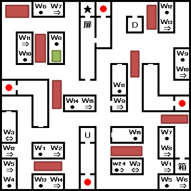
- ★ : 세라프 라파엘
- 箱 : LAW 속성 최강의 탄 「光の弾丸」
카테드랄 3F
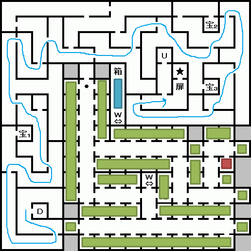
- ★ : 세라프 가브리엘
- 箱 : LAW 속성 최강의 총 「メギドファイア」
- 宝1: 가넷
- 宝2: 에메랄드
- 宝3: 펄
카테드랄 2F
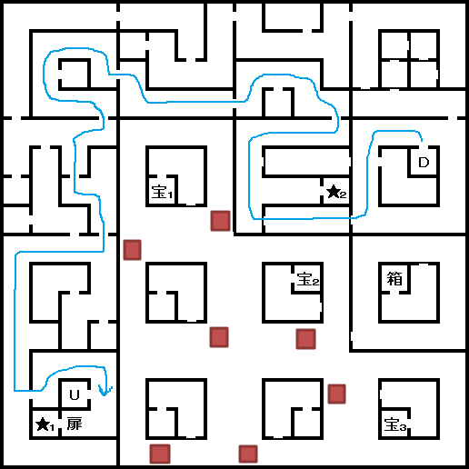
- ★1: 세라프 우리엘
- ★2: 고정 악마 출현 포인트
- 箱 : LAW 속성 최강의 검 「天の御剣」
- 宝1: 다이아몬드
- 宝2: 아쿠아마린
- 宝3: 아쿠아마린
카테드랄 1F
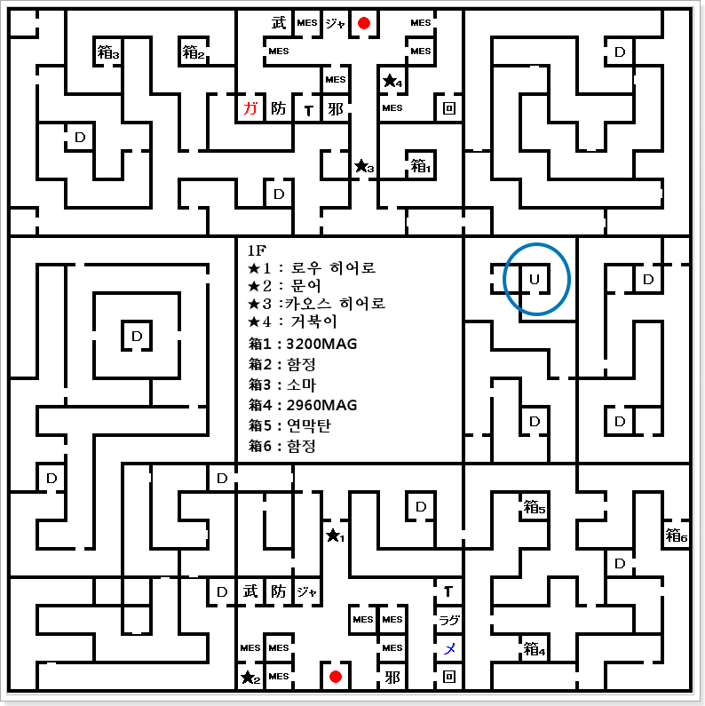
카테드랄 B1F
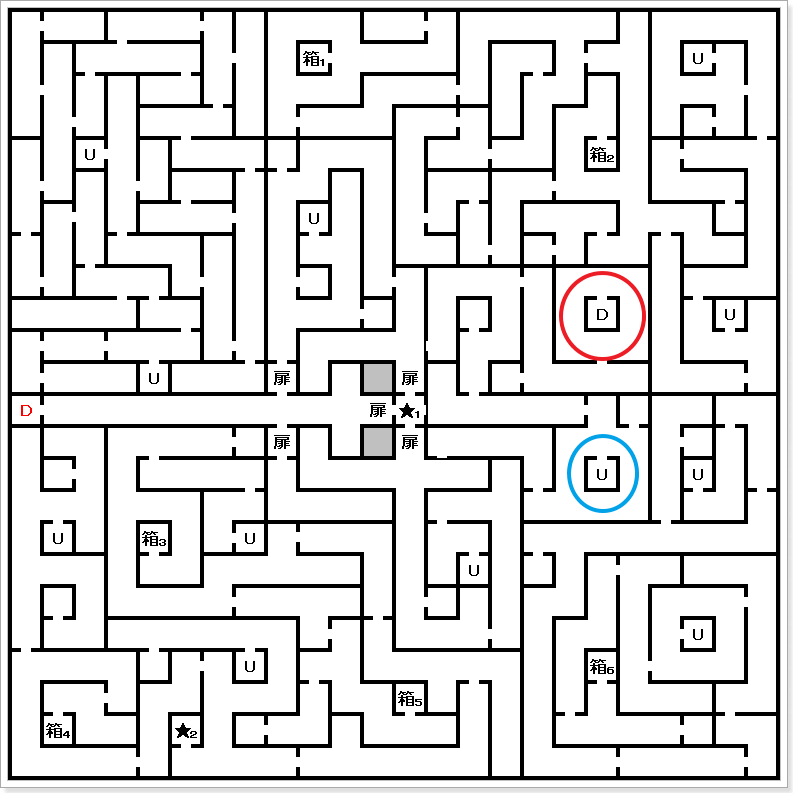
- 箱1 : 함정
- 箱2 : 2960MAG
- 箱3 : 코어쉴드
- 箱4 : 3200MAG
- 箱5 : 함정
- 箱6 : 독침
- ★1 : 카테드랄 중심부
- ★2 : 고정 악마 출현 포인트
카테드랄 B2F
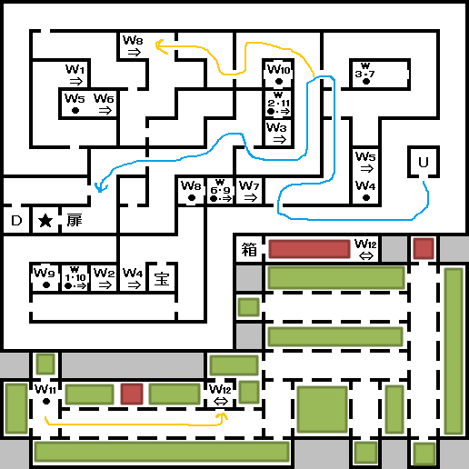
- ★ : 마왕 수르트
- 箱 : CHAOS 속성 최강의 검 「倶利迦羅の剣」
워프 순서 : W8 → W9 → W10 → W11
- 宝 : 토파즈
카테드랄 B3F
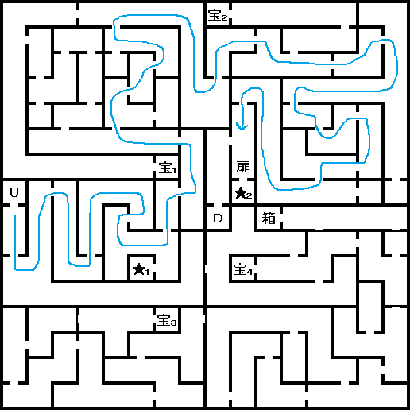
- ★1 : 고정 악마 출현 포인트
- ★2 : 마왕 아스타로트
- 箱 : CHAOS 속성 최강의 총「ピースメーカー」
- 宝1 : 오팔
- 宝2 : 루비
- 宝3 : 사파이어
- 宝4 : 오닉스
카테드랄 B4F
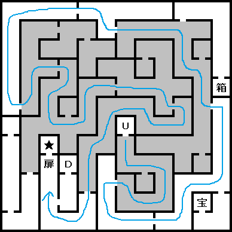
- ★ : 마왕 아리오크
- 宝 : 터키석
- 箱 : CHAOS 속성 최강의 탄「闇の弾丸」
카테드랄 B5F
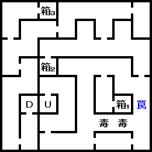
- 箱1 : 함정
- 箱2 : 비공침(秘孔針)
- 箱3 : 「ドラゴンATM」
카테드랄 B6F
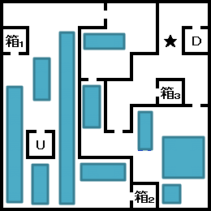
- ★ : 루이 사이퍼
- 箱1 : 반혼향
- 箱2 : 비공침(秘孔針)
- 箱3 : 연막탄(煙幕弾)
카테드랄 B7F
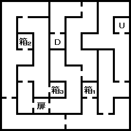
- 箱1 : 여래상(如来像)
- 箱2 : 아미타염주(阿弥陀数珠)
- 箱3 : 소마
카테드랄 B8F
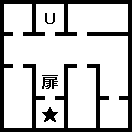